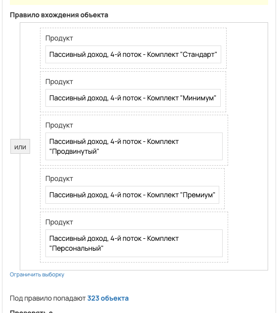
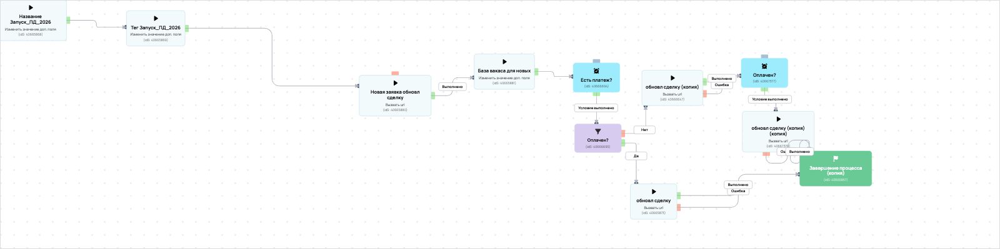

[AMO] [ED] Пассивный доход 4-й поток
- ID процесса:
2343988 - Объект: Заказы
- Статус: Ожидание событий
- Внутренняя страница: 2343988. [AMO] [ED] Пассивный доход 4-й поток
- GetCourse: Карточка | Схема процесса
Скриншоты процесса


Коротко для заказчика
- Главное: В процесс попадают заказы по следующим продуктам: «Пассивный доход, 4-й поток - Комплект "Персональный"», «Пассивный доход, 4-й поток - Комплект "Минимум"», «Пассивный доход, 4-й поток - Комплект "Продвинутый"» и «Пассивный доход, 4-й поток - Комплект "Премиум"».
- Дальше он передает данные как: Оплаты и заказы.
- Связанных баз Vakas: 1.
Понятное описание процесса
- Процесс работает с объектом GetCourse: Заказы. Текущий статус процесса: Ожидание событий.
- На вход попадают данные так: В процесс попадают заказы по следующим продуктам: «Пассивный доход, 4-й поток - Комплект "Персональный"», «Пассивный доход, 4-й поток - Комплект "Минимум"», «Пассивный доход, 4-й поток - Комплект "Продвинутый"» и «Пассивный доход, 4-й поток - Комплект "Премиум"».
- Техническое правило входа в GetCourse: Продукт (ID: 4223810) или Продукт (ID: 4223784) или Продукт (ID: 4223816) или Продукт (ID: 4223818) или Продукт (ID: 4223822).
- Внутри схемы есть дополнительные проверки/ожидания: 3. Основные блоки: «Есть платеж?»; «Оплачен?».
- Дальше процесс делает прямые вызовы Vakas: 4. Напрямую задействованы базы: 93596.
- Передача: 93596. База 93596: Оплаты и заказы. Передаются параметры:
number,id,order_id,positions,costMoney,leftCostMoney,payedMoney,status,paymentLink,firstNameи другие. - Передача: 93596. База 93596: Оплаты и заказы. Передаются параметры:
number,id,order_id,positions,costMoney,leftCostMoney,payedMoney,status,paymentLink,firstNameи другие. - Что происходит в amoCRM: На входе в этап ПАССИВНЫЙ ДОХОД -> НОВЫЙ ЗАКАЗ [75466258] база ищет дубль и может взять старую сделку только из заранее разрешенных этапов.
Ход процесса в GetCourse
- Схема состоит из 20 блоков и 32 переходов.
- По типам: стартов 1, условий/ожиданий 3, вызовов URL 9, изменений полей 3, финалов 1.
Блоки процесса: что делают и зачем нужны:
- Блок
40665835«Начало работы» (старт). Что делает: Запускает выполнение схемы для объекта, который попал под правило входа процесса. Зачем нужен: Нужен как точка входа: от него GetCourse начинает движение объекта по схеме. Дальше: если результат «Выполнено», идет в «Название Запуск_ПД_2026». - Блок
40665868«Название Запуск_ПД_2026» (изменение поля). Что делает: меняет полеorder_name_amo(Установить равным). значение: Запуск_ПД_2026 Зачем нужен: Нужен, чтобы записать внутри GetCourse технический признак/значение, которое потом используется в передаче или логике ветвления. Дальше: если результат «Выполнено», идет в «Тег Запуск_ПД_2026». - Блок
40665869«Тег Запуск_ПД_2026» (изменение поля). Что делает: меняет полеdeal_tag_1(Установить равным). значение: Запуск_ПД_2026 Зачем нужен: Нужен, чтобы записать внутри GetCourse технический признак/значение, которое потом используется в передаче или логике ветвления. Дальше: если результат «Выполнено», идет в «Новая заявка обновл сделку». - Блок
40665880«Новая заявка обновл сделку» (вызов URL). Что делает: Передает в Vakas: 93596. База 93596, канал «Оплаты и заказы» (GET); параметры:number,id,order_id,positions,costMoney,leftCostMoney,payedMoney,status,paymentLink,firstName,lastName,name,email,phoneи другие; timeout 300 сек. Зачем нужен: Нужен, чтобы передать подходящий объект в 93596. База 93596; дальше На входе в этап ПАССИВНЫЙ ДОХОД -> НОВЫЙ ЗАКАЗ [75466258] база ищет дубль и может взять старую сделку только из заранее разрешенных этапов. Дальше: если результат «Ошибка», идет в «n8n fail после Новая заявка обновл сделку #40665880»; если результат «Выполнено», идет в «n8n success после Новая заявка обновл сделку #40665880». - Блок
43526025«n8n success после Новая заявка обновл сделку #40665880» (вызов URL). Что делает: Вызывает внешний URL: testn8n.easydrafting.ru/webhook/gc-vakas-retry-events (POST); параметры:event,clientED,gcDomain,action,process_id,process_name,entity_type,object_id,order_id,user_id,name,email,phone,error_message; timeout 10 сек. Зачем нужен: Нужен, чтобы процесс GetCourse передал данные во внешний сервис testn8n.easydrafting.ru. Дальше: если результат «Ошибка», идет в «База вакаса для новых»; если результат «Выполнено», идет в «База вакаса для новых». - Блок
40665881«База вакаса для новых» (изменение поля). Что делает: меняет полеlast_base_vakas(Установить равным). значение: 93596 Зачем нужен: Нужен, чтобы записать внутри GetCourse технический признак/значение, которое потом используется в передаче или логике ветвления. Дальше: если результат «Выполнено», идет в «Есть платеж?». - Блок
40666694«Есть платеж?» (ожидание условия). Что делает: Останавливает объект в ожидании нужного условия; точная формула в дампе не расшифрована. Зачем нужен: Нужен, чтобы не отправлять объект раньше времени: процесс ждет нужное событие, заказ, сегмент или другое условие. Дальше: если результат «Условие выполнено», идет в «Оплачен?». - Блок
40666695«Оплачен?» (условие). Что делает: Проверяет ветвление «Оплачен?», но текст условия в дампе не расшифрован. Зачем нужен: Нужен, чтобы разделить поток: подходящих пользователей/заказы отправить дальше, неподходящих перевести на другую ветку или завершить. Дальше: если результат «Нет», идет в «обновл сделку (копия)»; если результат «Да», идет в «обновл сделку». - Блок
40665873«обновл сделку» (вызов URL). Что делает: Передает в Vakas: 93596. База 93596, канал «Оплаты и заказы» (GET); параметры:number,id,order_id,positions,costMoney,leftCostMoney,payedMoney,status,paymentLink,firstName,lastName,name,email,phoneи другие; timeout 300 сек. Зачем нужен: Нужен, чтобы передать подходящий объект в 93596. База 93596; дальше На входе в этап ПАССИВНЫЙ ДОХОД -> НОВЫЙ ЗАКАЗ [75466258] база ищет дубль и может взять старую сделку только из заранее разрешенных этапов. Дальше: если результат «Ошибка», идет в «n8n fail после обновл сделку #40665873»; если результат «Выполнено», идет в «n8n success после обновл сделку #40665873». - Блок
43526018«n8n success после обновл сделку #40665873» (вызов URL). Что делает: Вызывает внешний URL: testn8n.easydrafting.ru/webhook/gc-vakas-retry-events (POST); параметры:event,clientED,gcDomain,action,process_id,process_name,entity_type,object_id,order_id,user_id,name,email,phone,error_message; timeout 10 сек. Зачем нужен: Нужен, чтобы процесс GetCourse передал данные во внешний сервис testn8n.easydrafting.ru. Дальше: если результат «Ошибка», идет в «Завершение процесса (копия)»; если результат «Выполнено», идет в «Завершение процесса (копия)». - Блок
40665857«Завершение процесса (копия)» (завершение). Что делает: Завершает ветку процесса после выполненных проверок и действий. Зачем нужен: Нужен, чтобы закрыть текущую ветку и не гонять объект по процессу повторно. Дальше переходов нет: это конечная точка ветки. - Блок
43526021«n8n fail после обновл сделку #40665873» (вызов URL). Что делает: Вызывает внешний URL: testn8n.easydrafting.ru/webhook/gc-vakas-retry-events (POST); параметры:event,clientED,gcDomain,action,process_id,process_name,entity_type,object_id,order_id,user_id,name,email,phone,error_message; timeout 10 сек. Зачем нужен: Нужен, чтобы процесс GetCourse передал данные во внешний сервис testn8n.easydrafting.ru. Дальше: если результат «Ошибка», идет в «Оплачен?»; если результат «Выполнено», идет в «Оплачен?». - Блок
40666647«обновл сделку (копия)» (вызов URL). Что делает: Передает в Vakas: 93596. База 93596, канал «Оплаты и заказы» (GET); параметры:number,id,order_id,positions,costMoney,leftCostMoney,payedMoney,status,paymentLink,firstName,lastName,name,email,phoneи другие; timeout 300 сек. Зачем нужен: Нужен, чтобы передать подходящий объект в 93596. База 93596; дальше На входе в этап ПАССИВНЫЙ ДОХОД -> НОВЫЙ ЗАКАЗ [75466258] база ищет дубль и может взять старую сделку только из заранее разрешенных этапов. Дальше: если результат «Ошибка», идет в «n8n fail после обновл сделку (копия) #40666647»; если результат «Выполнено», идет в «n8n success после обновл сделку (копия) #40666647». - Блок
43526034«n8n success после обновл сделку (копия) #40666647» (вызов URL). Что делает: Вызывает внешний URL: testn8n.easydrafting.ru/webhook/gc-vakas-retry-events (POST); параметры:event,clientED,gcDomain,action,process_id,process_name,entity_type,object_id,order_id,user_id,name,email,phone,error_message; timeout 10 сек. Зачем нужен: Нужен, чтобы процесс GetCourse передал данные во внешний сервис testn8n.easydrafting.ru. Дальше: если результат «Ошибка», идет в «Оплачен?»; если результат «Выполнено», идет в «Оплачен?». - Блок
40667377«Оплачен?» (ожидание условия). Что делает: Останавливает объект в ожидании нужного условия; точная формула в дампе не расшифрована. Зачем нужен: Нужен, чтобы не отправлять объект раньше времени: процесс ждет нужное событие, заказ, сегмент или другое условие. Дальше: если результат «Условие выполнено», идет в «обновл сделку (копия) (копия)». - Блок
40667378«обновл сделку (копия) (копия)» (вызов URL). Что делает: Передает в Vakas: 93596. База 93596, канал «Оплаты и заказы» (GET); параметры:number,id,order_id,positions,costMoney,leftCostMoney,payedMoney,status,paymentLink,firstName,lastName,name,email,phoneи другие; timeout 300 сек. Зачем нужен: Нужен, чтобы передать подходящий объект в 93596. База 93596; дальше На входе в этап ПАССИВНЫЙ ДОХОД -> НОВЫЙ ЗАКАЗ [75466258] база ищет дубль и может взять старую сделку только из заранее разрешенных этапов. Дальше: если результат «Ошибка», идет в «n8n fail после обновл сделку (копия) (копия) #40667378»; если результат «Выполнено», идет в «n8n success после обновл сделку (копия) (копия) #40667378». - Блок
43526041«n8n success после обновл сделку (копия) (копия) #40667378» (операция). Что делает: Выполняет служебный шаг схемы «n8n success после обновл сделку (копия) (копия) #40667378». Зачем нужен: Нужен как промежуточный технический шаг в схеме «n8n success после обновл сделку (копия) (копия) #40667378». Дальше: если результат «Ошибка», идет в «Завершение процесса (копия)»; если результат «Выполнено», идет в «Завершение процесса (копия)». - Блок
43526044«n8n fail после обновл сделку (копия) (копия) #40667378» (операция). Что делает: Выполняет служебный шаг схемы «n8n fail после обновл сделку (копия) (копия) #40667378». Зачем нужен: Нужен как промежуточный технический шаг в схеме «n8n fail после обновл сделку (копия) (копия) #40667378». Дальше: если результат «Ошибка», идет в «Оплачен?»; если результат «Выполнено», идет в «Оплачен?». - Блок
43526037«n8n fail после обновл сделку (копия) #40666647» (операция). Что делает: Выполняет служебный шаг схемы «n8n fail после обновл сделку (копия) #40666647». Зачем нужен: Нужен как промежуточный технический шаг в схеме «n8n fail после обновл сделку (копия) #40666647». Дальше: если результат «Ошибка», идет в «Оплачен?»; если результат «Выполнено», идет в «Оплачен?». - Блок
43526028«n8n fail после Новая заявка обновл сделку #40665880» (вызов URL). Что делает: Вызывает внешний URL: testn8n.easydrafting.ru/webhook/gc-vakas-retry-events (POST); параметры:event,clientED,gcDomain,action,process_id,process_name,entity_type,object_id,order_id,user_id,name,email,phone,error_message; timeout 10 сек. Зачем нужен: Нужен, чтобы процесс GetCourse передал данные во внешний сервис testn8n.easydrafting.ru. Дальше: если результат «Ошибка», идет в «Тег Запуск_ПД_2026»; если результат «Выполнено», идет в «Тег Запуск_ПД_2026».
Что именно входит в процесс
- В процесс попадают заказы по следующим продуктам: «Пассивный доход, 4-й поток - Комплект "Персональный"», «Пассивный доход, 4-й поток - Комплект "Минимум"», «Пассивный доход, 4-й поток - Комплект "Продвинутый"» и «Пассивный доход, 4-й поток - Комплект "Премиум"».
Как именно настроено правило
- Название сделки в amo: «Запуск_ПД_2026».
- Тег сделки в amo: «Запуск_ПД_2026».
Куда и как передается дальше
| База Vakas | Что передается | Этап в amoCRM | Что происходит со сделкой |
|---|---|---|---|
| 93596. База 93596 | Оплаты и заказы | ПАССИВНЫЙ ДОХОД -> НОВЫЙ ЗАКАЗ [75466258] | На входе в этап ПАССИВНЫЙ ДОХОД -> НОВЫЙ ЗАКАЗ [75466258] база ищет дубль и может взять старую сделку только из заранее разрешенных этапов. |